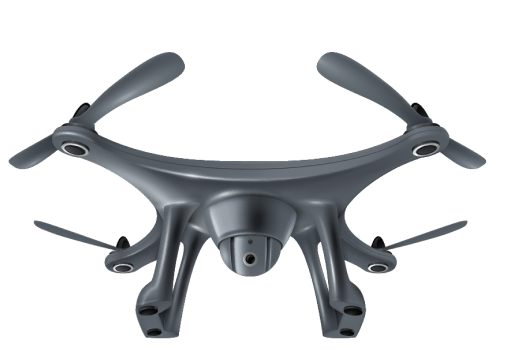

Высокоэффективные Энтомофаги
Внесение энтофагов при помощи БПЛА увеличивает эффективность защиты растений до 90%

до 90% сои

до 85 % сахарной свеклы

до 70 % рапса

до 85 % подсолнуха

до 80 % кукурузы

до 90 % овощных и плодовых культур
Об Услуге Энтомофаги
Компания AGROSCOUT за время научной работы совместно с ведущими НИИ страны разработала высокоэффективный метод защиты посевов от вредителей с использованием энтомофагов. Самый современный технопарк в стране, позволяет нам точно и быстро вносить трихограмму, златоглазку и габробракон на любых посевных площадях, включая труднодоступные участки, без применения тяжелой техники.

Плюсы использования Приемущества внесения энтомофаги
преимущества
Низкая стоимость по сравнению с расходами на химическую обработку растений.

Низкие затраты на внесение трихограмм, златоглазки и габробракону по сравнению с трационными методами обработки

Высокая эффективность, снижение потерь урожайности в результате обработки с/х культур более чем на 90%.
За 6 0 минут полета дрон со специальным дозатором обрабатывает до 100 гектаров.

Двукратное внесение позволяет уничтожать несколько поколений вредителей.

Внесение с БПЛА гарантирует внедрение особей трихограммы, златогласки, габробракрну равномерно на всех участках поля
Проблемы которые мы решаемС помощью энтомофагов мы решаем следующие проблемы:

Уничтожение опылителей (пчелы, шмели)

Уничтожения природных энтомофагов (златоглазки, божьи коровки и т.д)
Дефицита воды для опрыскивания

Потеря урожая от работы тяжелой техники

Уничтожение на посевах таких вредителей как совки, огневки, кукурузные и стеблевые мотельки, тля, клещи
Резистентности у вредителей к химическим препаратам, что ведет за собой увеличение инсектицидной нагрузки, соответственно увеличение бюджета на защиту растений.
Эффективная защитаТрихограмма
трихограмма
Трихограмма — мелкое насекомое, которое будучи личинкой, питается яйцами паразитов. Современные комплексы БПЛА (дроны) могут использоваться не только для сбора информации, но и для высокоэффективной и экономичной борьбы с вредителями урожая с помощью распыления трихограммы. Трихограмму можно вносить для защиты от совок, кукурузного мотылька, лугового мотылька и других чешуекрылых вредителей. Она паразитирует на яйцах более 70 видов вредителей.
Расселение трихограммы на полях России рекомендуется проводить как в стандартные сроки внесения,
в которые наблюдается максимальная активность всех видов вредителей, так и при видимом появлении
вредителей. В этом случае можно добиться максимальной эффективности с минимальным вредом для
культур.
Для расселения трихограммы используется специальная автоматизированная система, которая
устанавливается на дроны мультироторного типа.
За 60 минут полета дрон со специальным дозатором обрабатывает до 100 гектаров. Эффективность
комплексной защиты растений с помощью
энтомофагов достигает 90%.
Трихограмма эффективна против таких вредителей:
Премениние златоглазкиЗлатоглазка
златоглазка
Каждая личинка златоглазки за жизнь способна уничтожить до 400 особей тли, более 2000 паутинных клещей, порядка 300 яиц колорадского жука, так же златоглазка пожирает гусениц первого возраста стеблевого мотылька, моли.

При своевременном внесении и соблюдении всех технологических процессов при производстве и
транспортировке, златоглазка эффективно защищает растение от вредителей и повышает урожайность.
Златоглазка уничтожает 76 видов вредителей и 11 видов клещей. Наиболее эффективна
в борьбе с очагами заражения тлей, к лещами, стеблевым мотыльком.
Вносится златоглазка с помощью дрона, дозировка составляет 1000 яиц на один гектар.
За 6 0 минут полета дрон со специальным дозатором обрабатывает до 100 гектаров. Эффективность
комплексной защиты растений с помощью
энтомофагов достигает 90%.
Златоглазка эффективна против таких вредителей:
Эффективная защитаГабробракон
Габробракон
Габробракон — это насекомое способно защитить поля от более 60 видов вредителей, включая самых опасных для посевов мотыльков, плодожорок и огневок. Особенно эффективно габробракон работает на злаковых культурах, сое, плодовых деревьях и виноградниках.
Данный вид наездников паразитирует на гусеницах совок, стеблевого мотылька, карадрины, листоверток и
различных чешуекрылых, поэтому исполь зование габробракона в нашей стране весьма целесообразно и
перспективно.
Габробракон высокопродуктивен: достаточно 1000 взрослых особей энтомофага, чтобы защитить от потерь
урожая 1 ГА земель.
За 6 0 минут полета дрон со специальным дозатором обрабатывает до 100 гектаров. Эффективность
комплексной защиты растений с помощью
энтомофагов достигает 90%*
Габробракон эффективный против таких вредителей:
Этапы работыКак это работает
Исследуем состояние посевов и популяцию вредителей
определяем необходимые энтомофаги
Выращиваем необходимую популяцию энтомофагов в собственной лаборатории
вносим энтомофагов при помощи БПЛА
исследуем посевы
Определяем наиболее эффективные энтомофаги и график их внесения
выращиваем энтомофагов
Вносим энтомофаги по уникальной схеме на поля при помощи дронов

Напишите намНужна помошь?

Заполните форму и мы за 5 минут подскажем вам лучшие способы
защиты вашего урожая


 Энтомофаги
Энтомофаги Опрыскивание
Опрыскивание Картография и мониторинг
Картография и мониторинг Каталог продукции
Каталог продукции Новости
Новости О компании
О компании Контакты
Контакты